The Advanced Encryption Standard
Intro & Design Approach
The Advanced Encryption Standard (AES) is a widely accepted and NSA-recommended encryption standard for protecting sensitive data, including classified government information. AES-128, used in this lab, is the smallest variant of AES, utilizing 128-bit keys and internal logic. In contrast, newer versions, AES-192 and AES-256, offer higher security levels by using longer key lengths, though all variants operate similarly.
This lab involves implementing the AES algorithm on our UPduino v3.1 UP5K FPGA using SystemVerilog. To maximize efficiency and minimize storage usage, we applied a pipelining method throughout the process. A simple testbench was created for this lab, where our STM32 MCU sends plaintext and a key to the FPGA over SPI. If the FPGA returns the correct ciphertext, an onboard LED is turned on to indicate success.
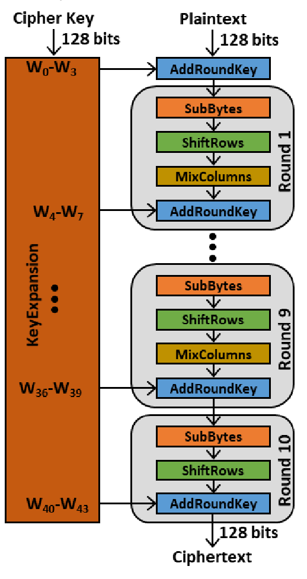
AES-128 Functionality
this section provides an overview of the AES-128 algorithm, and will be referenced in the design section
Key Schedule
The key schedule in AES-128, also known as key expansion, is an essential part of the encryption process. It generates a unique 128-bit round key for each of the 10 rounds, based on the original 128-bit cipher key. The key schedule works through several steps:
Rot Word: This operation rotates a four-byte word by shifting each byte one position to the left, which helps introduce diffusion.
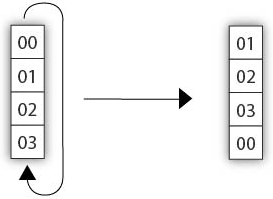
Sub Word: Each byte in the word undergoes an S-box substitution, adding nonlinearity to the key schedule. In this substitution, each byte’s value is mapped to a new value by treating the byte as coordinates (x, y) in the S-box grid. The byte is then replaced with the value at the corresponding position in the S-box table.
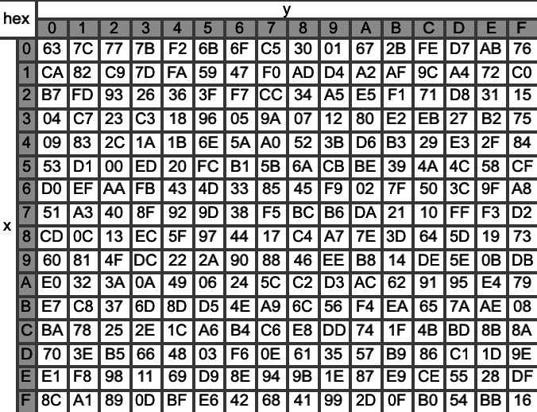
Rcon: A round constant specific to each round is XORed with the first word of each four-word block, ensuring each round key is unique.
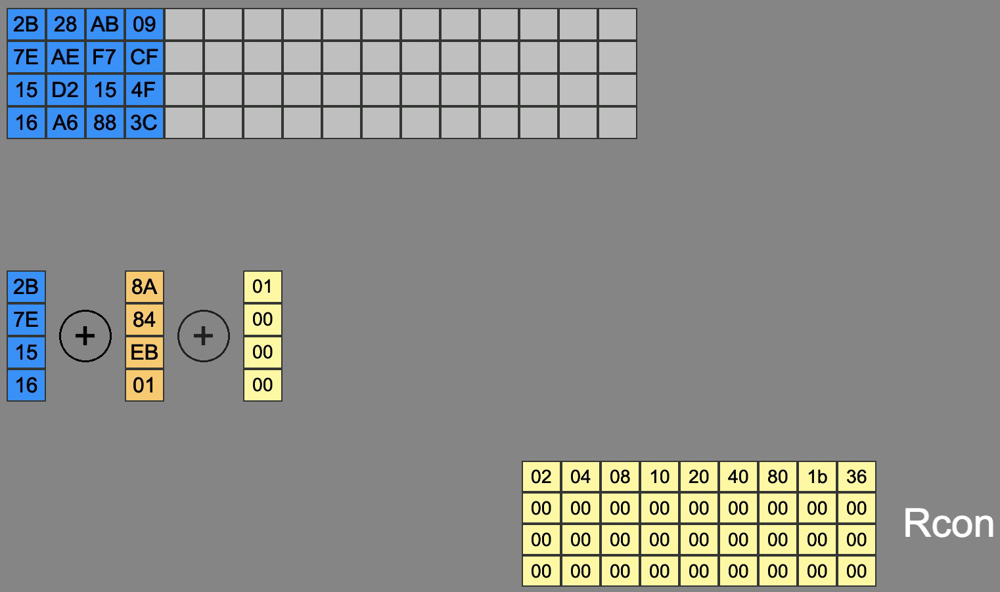
Fill Round Key: The remaining words of each round key are derived by XORing parts of the previous round key, filling out the key material for each round. This is done recusively, as each round is XORed with the previous output from the recursive XOR. This is done until a new round key is produced.
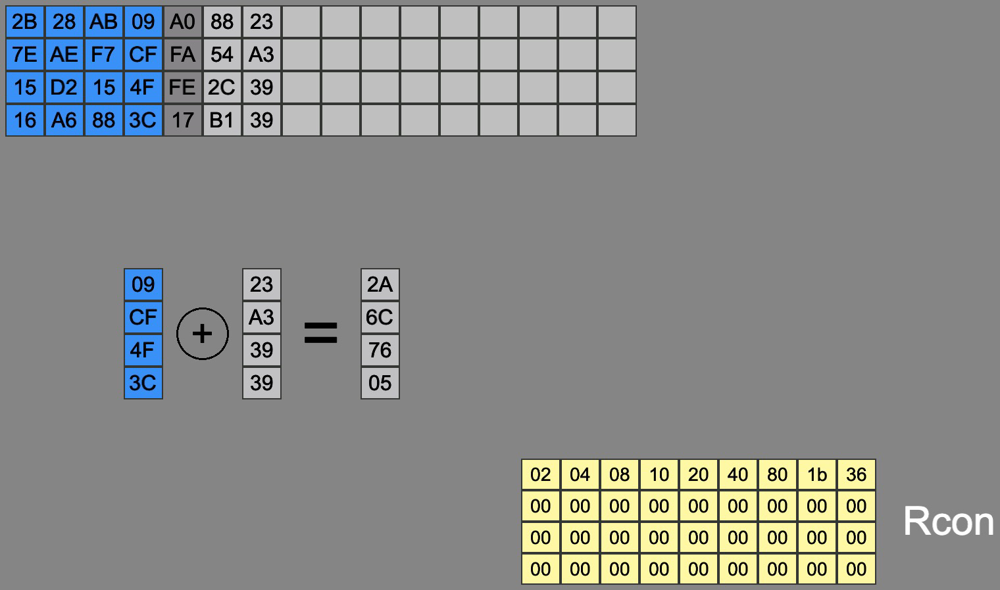
As each new round key is created, it is then used as the basis for generating the next round key. The first word of the new round key goes through the RotWord transformation, followed by other steps in the key expansion process, ensuring that each subsequent round key is derived from the previous one in a recursive, circular fashion. This process continues until all round keys are generated for the encryption.
Encryption Process
The encryption process is classified as all of the sequential and combinational logic performed on the cyhertext, and intermediate versions of that cyphertext, throughout all rounds in the full AES-128 encryption standard. This process depends on the current round key, which is generated in parallel with the encryption process ensuring that the correct round key is used for its intended encryption round.
Sub Bytes: Similar to Su bWord in the key expansion process, however each byte in the full 128-bit cyphertext undergoes an S-box substitution, adding nonlinearity to the key schedule. Each byte’s value is mapped to a new value by treating the byte as coordinates (x, y) in the S-box grid, as done in Figure 3 under key schedule.
Shift Rows: Each row in the 4x4, byte-wise, column-major representation of the 128-bit ciphertext is shifted left by one byte, with any overflow bytes wrapping around to the right side sequentially.
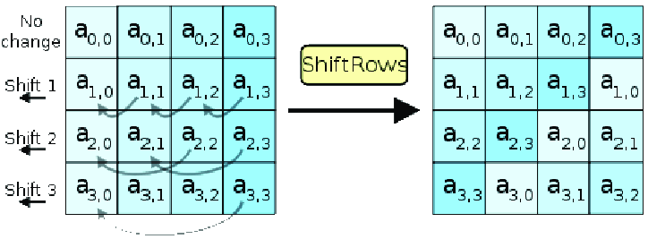
Mix Cols: Each column of the 4x4 byte matrix is transformed using Galois Field (GF(2^8)) arithmetic to mix and spread out the bytes, enhancing diffusion in the encryption.
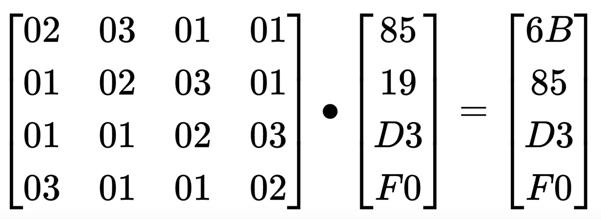
Add Round Key: This step combines the current ciphertext with the current round key using an XOR operation, ensuring all round keys are unique.
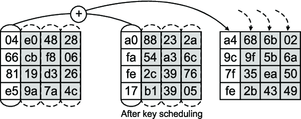
AES-128 Note
It is important to note that not all rounds of the AES-128 encrption standard are the same, in particular the first and last round. For informaiton and helpful demonstration of all related steps of AES-128, see this website.
Design
This section goes into the hardware and software design specifics
Hardware
This deisgn was implamented on the Micro Ps protoboard as developed in lab1 and shown belwin Figure 9. The 8 pin dip-switch must also assume the position shown in the bottom of Figure 9 in order to properly communicate between the on board MCU and FPGA via SPI.
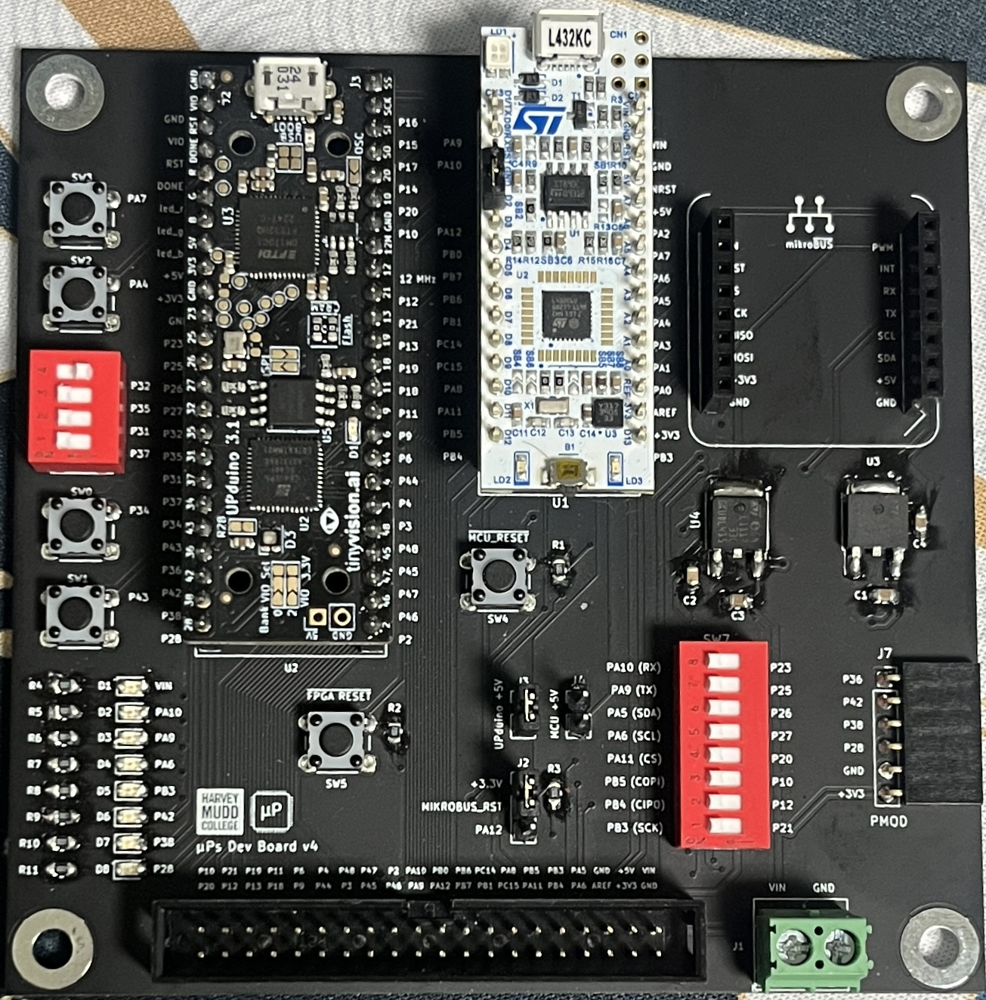
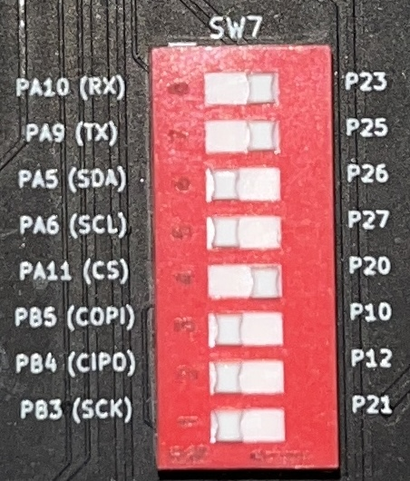
Software
For this lab, a simple testbench was provided, which verifies the correctness of the output from the implemented AES-128 algorithm on the FPGA.
The following block diagram, as seen in Figure 10, features a pipelined design, where delay and hold flip-flops are used to store the previous round values for use in the following round calculations. The controller block contains the finite state machine (FSM) logic, as shown in Figure 11, and generates register enable and multiplexer (MUX) control signals based on the current round requirements. The key schedule and the remaining logic that handles the main ciphertext operations run in parallel, allowing the pipeline to be synchronized between both functions. This results in a clear and efficient design that is easily replicated across rounds.
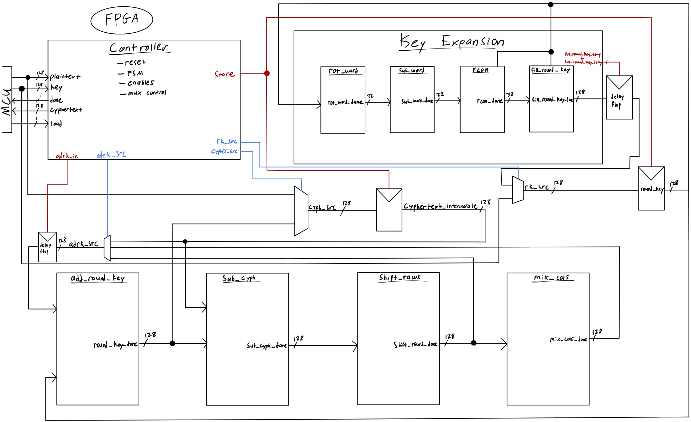
The FSM, as shown in Figure 10 below, was used to design the AES-128 implementation in terms of the current round, corresponding to the state number. This FSM features an S0 state, which waits for a reset signal generated by the controller module based on the ‘load’ signal, which goes to 0 when all bits are ready to be read by the FPGA through its SPI interface. An S12 state holds the ‘done’ signal and the ciphertext output once the AES-128 encryption is complete. All round states from S1 to S11 correspond to the rounds required to correctly implement the AES-128 encryption algorithm.
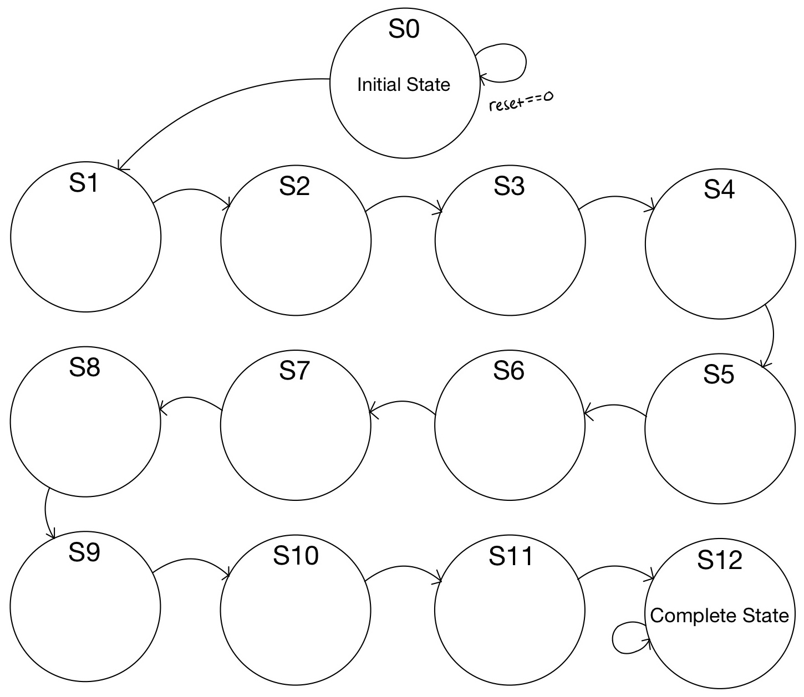
Results
This lab resulted in a functional implementation of the AES-128 algorithm on the UPduino v3.1 UP5K FPGA, which passed both the provided encryption process and SPI functionality test benches. The implementation was successfully deployed on hardware, enabling effective communication with the onboard STM32 MCU via SPI on the Micro-Ps protoboard. The system also passed the internal check, causing the PA9 onboard LED to illuminate upon currect encryption. This lab took approximately 22 hours to complete.
Simulation Results
The following ModelSim waveforms demonstrate successful testbench results for both the AES-128 encryption algorithm and the implemented SPI protocol, respectively.
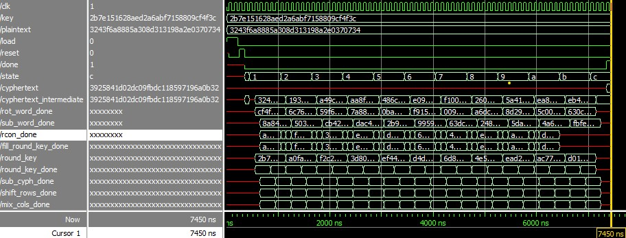
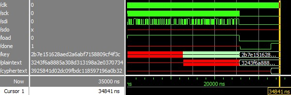
Hardware Results
Issues persisted when implementing this encryption algorithm in hardware. The chip select (CS) signal was not performing as expected, resulting in incorrect data transfer from the FPGA to the MCU. In the future, debugging will continue using a logic analyzer and the Segger debug terminal to track down what the CS pin is doing incorrectly and to determine what data (if any) is being sent to the MCU. However, as the class now moves toward final project development, further work on this lab will be halted.
Reflection
This lab served as a cumulative project that brought together much of my SystemVerilog and FPGA knowledge. I really enjoyed the implementation process and the final product, as it demonstrates just how powerful these microchips can be. Additionally, I was very excited to able to learn about the AES-128 encryption algorithm. I think this was a great lab to conclude the lab portion of the Microprocessors course, and I am extremely excited to apply this knowledge to my final project.